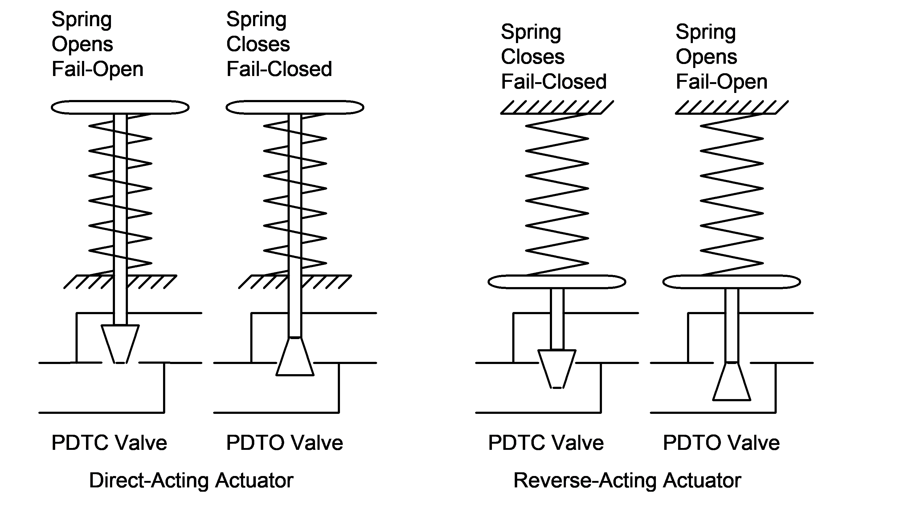

Selecting an Action
| Desired fail mode | Valve body | Actuator action |
|---|---|---|
| Fail closed | PDTC | Reverse-acting |
| Fail closed | PDTO | Direct-acting |
| Fail open | PDTC | Direct-acting |
| Fail open | PDTO | Reverse-acting |

Pick the actuator action from the desired fail-safe outcome and the valve's body orientation together — not either one alone.